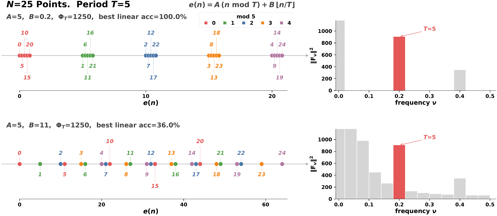
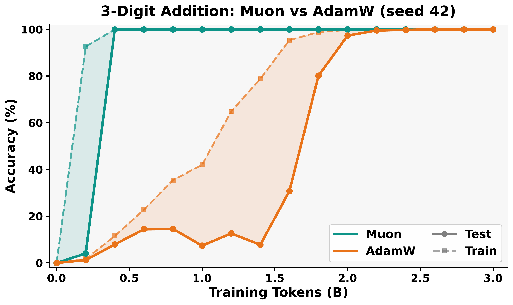

Convergent Evolution in Number Representations
Deqing Fu, Tianyi Zhou, Mikhail Belkin, Vatsal Sharan, Robin Jia
A suspiciously universal pattern
A growing body of interpretability work has found that language models represent numbers using periodic features. Take the embedding of each integer token, run a discrete Fourier transform over the sequence of embeddings, and you reliably see spikes at periods T = 2, 5, 10. This has been observed in GPT-2, Llama, and other Transformers, and interpreted as evidence that next-token prediction teaches models something structural about numbers.
We started with a simple question: how far does this generalize? So we looked at almost everything we could get our hands on. Transformers of many scales (GPT-2, GPT-OSS, Llama-3, Llama-4, DeepSeek-V3), non-Transformer LLMs (Mamba, Falcon-Mamba, xLSTM, Kimi-Linear), and classical word embeddings (GloVe, FastText).

Every system showed the same spikes. Including, amusingly, the raw frequency distribution of number tokens in text. You do not need a model. Numbers like 10, 20, 30, 100 simply appear more often than 17, 23, 41, and the Fourier transform of that histogram already lights up at periods 2, 5, and 10.
If the raw token distribution already has the signature, what exactly are we measuring when we see it in a trained model?
Spectral vs. geometric convergence
This motivates a distinction we make throughout the paper.
- Spectral convergence. The embedding has Fourier spikes at the expected periods.
- Geometric convergence. The embedding actually encodes n mod T as a linearly decodable quantity. A linear probe (we report Cohen's κ, which corrects for chance) can classify numbers by their residue mod 2, 5, or 10.
The first is a statement about the spectrum. The second is a statement about geometry: period-T structure is only useful if numbers sharing the same residue cluster together in embedding space.
A theorem: spikes are necessary but not sufficient
The main theoretical result in the paper formalizes this gap. Let $\{e(n)\}_{n=0}^{N-1}$ be the embeddings of numbers 0 through $N-1$, and let $C_r = \{n : n \equiv r \pmod T\}$ be the mod-$T$ residue classes. Define the discrete Fourier transform
$$F_\nu = \tfrac{1}{\sqrt{N}} \sum_{n=0}^{N-1} e(n) \, e^{-2\pi i \nu n}, \qquad \Phi_T = \sum_{\ell=1}^{T-1} \|F_{\ell/T}\|^2,$$
so $\Phi_T$ is the total Fourier power at harmonics of period $T$. Let $S_B$ and $S_W$ be the between- and within-class scatter matrices of the residue classes.
Theorem 1 (Fourier spikes are necessary but not sufficient).
- Necessity. If $\Phi_T = 0$, then $S_B = 0$, and no linear probe can classify $n \bmod T$ above chance.
- Insufficiency. For any $T \ge 2$, any $C > 0$, and any $\varepsilon > 0$, there exist $N$ divisible by $T$ and embeddings $e(n)$ with $\Phi_T > C$ such that no $T$-class linear classifier achieves accuracy above $1/T + \varepsilon$. In other words, the Fourier spike can be arbitrarily large while linear probes do no better than random guessing by more than $\varepsilon$.
The necessity direction follows from a Fourier identity (Lemma in the paper) that gives $\mathrm{Tr}(S_B) = \Phi_T / N$. The insufficiency direction is the interesting part. The paper gives an explicit family of counterexamples.
The counterexample, in pictures
Every number $n \in \{0, \dots, N-1\}$ decomposes uniquely as $n = r + mT$ with residue $r \in \{0, \dots, T-1\}$ and block index $m \in \{0, \dots, K-1\}$ where $K = N/T$. Pick two vectors $A$ and $B$ and set
$$e(n) = A r + B m.$$
The term $Ar$ encodes the residue and contributes to $S_B$ (and therefore to $\Phi_T$). The term $Bm$ varies within each residue class and contributes only to $S_W$. The two pieces live on independent axes, so scaling $\|B\|$ moves the embeddings along a direction that is invisible to the Fourier spike but arbitrarily large in the within-class scatter.

The paper also gives matching Fisher-discriminant bounds that sharpen the picture:
$$\frac{1}{(T-1)\,\mathrm{cond}(S_W)} \cdot \frac{\Phi_T}{N \, \lambda_{\min}(S_W)} \;\le\; \lambda_{\max}(S_W^{-1} S_B) \;\le\; \frac{\Phi_T}{N \, \lambda_{\min}(S_W)}.$$
The Fourier power sets $\Phi_T$, but the conditioning of $S_W$ sets the gap between the upper and lower bounds. Two models with similar Fourier spectra can have wildly different probe accuracy depending on how the periodic signal aligns with the within-class noise.

What separates the two? Controlled 300M-parameter runs
To isolate what drives geometric convergence, we trained 300M-parameter models from scratch on 10B tokens of FineWeb-Edu under tightly controlled conditions. We varied three axes: data, architecture, and optimizer.
Data: which co-occurrence signals matter?

Swap Numbers (destroying text-number association) drops κ from 85.4 to 28.8 at $T=10$; Unigram Replace (destroying all co-occurrence) falls to chance.We designed a series of ablations that each remove one specific property of the training corpus. Swap Numbers preserves number $n$-gram statistics but breaks the link between numbers and their text context. Unigram Replace resamples each number token independently from its marginal distribution, destroying all co-occurrence. Isolate-k packs sequences so that each contains at most $k$ number tokens, controlling cross-number interaction. ContextLength-$\ell$ restricts the context window to $\ell$ tokens.
Each perturbation degrades linear probe accuracy. None of them noticeably changes the Fourier spectrum. Put differently: the spikes are cheap, the geometry is earned. And no single signal is doing all the work. Text-number co-occurrence, broader context, and cross-number interaction each contribute something, and removing any one of them leaves probing weaker than the original setting.
We view this as structure attribution. Influence functions attribute predictions to individual training examples. Our controlled perturbations do the analogous thing at the level of representations: they attribute learned features to specific structural properties of the data distribution.
Architecture: not all sequence models are equal

Holding data and compute constant, Transformers and Gated DeltaNet (a linear RNN) learn geometrically separable mod-T features. LSTMs sit near chance on the probe, even though their Fourier spikes are as visible as the Transformer's. This is the cleanest demonstration we have that Fourier spikes are a misleading proxy: a model can wear the costume without having the geometry underneath.
Optimizer: Muon vs. AdamW
Muon and AdamW produce similar Fourier spectra across architectures, but probing accuracy varies across optimizer choices. The optimizer is not a cosmetic choice at the representation level.
A second route: arithmetic training

Pretraining on general text is not the only route. Training from scratch on addition can also induce geometrically separable periodic features, but only in the multi-token setting. In 9-digit addition, each output token $c_i$ satisfies
$$c_i = (a_i + b_i + \gamma_i) \bmod 1000,$$
where $\gamma_i \in \{0, 1\}$ is the carry. Each output position is therefore a mod-1000 classification problem. Because our models use tied embeddings, the output logits depend directly on the embedding matrix, so there is direct pressure for the embeddings to develop non-trivial $\Phi_{1000}$, and hence non-trivial $\Phi_T$ for all $T$ dividing $1000 = 2^3 \cdot 5^3$.
In single-token (3-digit) addition, there is no modular constraint. The sequences $a + b = c$ are identical whether interpreted as mod-1000 or mod-1111 arithmetic. The learned representations depend on optimizer and seed, and Fourier features emerge only sometimes.

Why “convergent evolution”?

In biology, convergent evolution is the independent emergence of similar traits in unrelated lineages facing shared environmental pressures. Eyes in vertebrates and cephalopods, wings in birds and bats, echolocation in bats and dolphins. The shared trait is evidence of a shared constraint, not a shared ancestor.
Fourier features in number embeddings fit the pattern. GPT, Mamba, LSTM, and word2vec share no architectural ancestry worth speaking of, but they all produce the same periodic spectrum. The shared constraint is the training distribution: number tokens occur at frequencies that are already periodic, and almost any learning process that digests this distribution inherits the periodicity.
But inheriting the spectrum is not the same as inheriting the function. Spectral convergence is universal. Geometric convergence requires the data, the architecture, and the optimizer to align, or else a training signal (like multi-token addition) that forces modular structure by construction.
Takeaways
- Fourier spikes are a weak diagnostic. Even the raw token frequency distribution has them. A spike in a model tells you about the training distribution, not necessarily about the model.
- The spectral/geometric hierarchy is real. Linearly decodable mod-T structure is a strictly stronger property than Fourier sparsity, and the two come apart both in theory and in practice.
- Structure attribution is a useful lens. Controlled perturbations of the training distribution let us attribute representations, not just predictions, to specific structural properties of the data.
- Multiple routes, same destination. Geometric convergence can arise from general text co-occurrence, or from multi-token arithmetic. The mechanism differs; the endpoint looks similar.
More broadly, we think the spectral/geometric distinction is a useful template for interpretability. As we increasingly rely on representation-level diagnostics to understand large models, it matters to distinguish visible structure from functional structure. They are not the same thing.